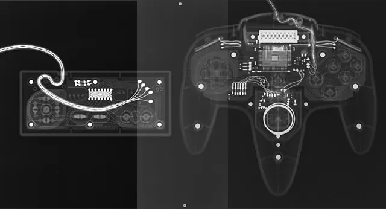

At TPG, we aim to highlight not just games, but the people behind them. The video game industry includes many amazing personalities, from the programmers working behind the keyboard, to the actors who give life to 3D models. TPG aims to perfom honest investigative reporting for the good of the people.
Featured Games
We at TPG want to showcase games made by ethical developers and with a meaningful experience.
History of Video Game Development
- Physicist William Higinbotham creates Tennis for Two
- Magnavox creates the Magnavox Odyssey with early games such as table tennis
- Snake released alongside Nokia 6110 cellphone as the one of the first mobile video games
- Virtual Boy is released by Nintendo, creating the first virtual reality console
- Minecraft is created by Markus Persson starting the development of the biggest games in the industry